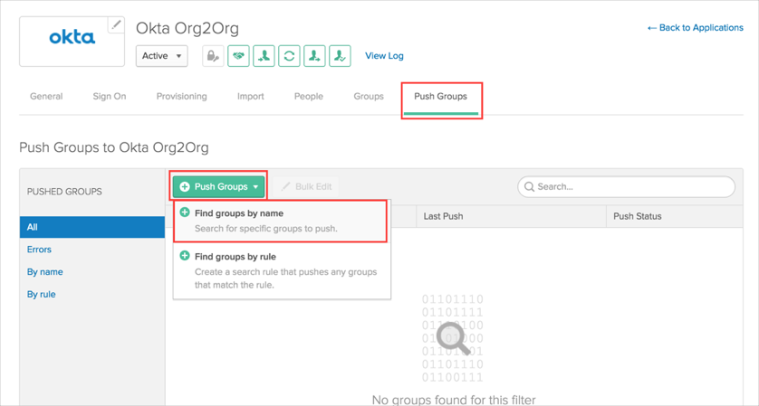
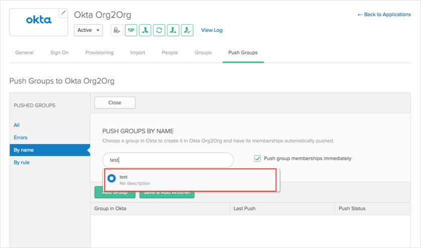
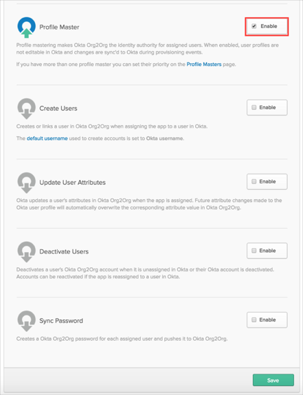

This guide provides the steps required to configure Provisioning for Org2Org, and includes the following topics:
Import New Users
Import Profile Updates
Import User Schema
Push New Users
Push Password Updates
Push Profile Updates
Push User Deactivation
Reactivate Users
Push Groups
Profile Master
This setup assumes that you are adding this Org2Org provisioning application to your Okta source (Spoke) organization.
Before you start configuring provisioning for Okta Org2Org, you need to do the following:
Obtain your API Token (Hub Organization):
Log in to the Okta Hub Organisation as an administrator:
Navigate to Security > API:

Click the Create Token button, then enter your token name in the dialog, then click Create Token:

Make a copy of your newly generated token:

Verify the Okta Org2Org app’s General Settings in Okta Spoke organization:
Make sure that you have the correct base URL to your Hub Org in Okta (for example: https://my-org.okta.com).
Configure your Provisioning settings for Okta Org2Org app in Spoke org as follows:
Check the Enable provisioning features box.
In the API Authentication, paste your API Token you saved into the Security Token field:

Scroll down and select the Provisioning Features you want to enable.

Click Save.
You can now assign people to the app, if needed (see below).
To assign users to the Okta Org2Org app:
Open the Okta Org2Org app, then select the People tab, then click Assign to People:

In the Assign Okta Org2Org to People dialog, select a user, then click Assign button:

You can set Security Question/Answer and select the Initial Status for the provisioned user:

After clicking Save, this user will be provisioned to Hub organization with the selected initial status and security question/answer.
What is the "Initial status" user attribute?
Setting the Initial status user attribute is required when assigning an Okta user to the Org2Org app. This attribute determines the status of the user in the target org when they are created, linked, or reactivated.
If the initial status is set to Active with password or Pending with password, Okta will generate a temporary password for the user. If Okta Password Sync is enabled, this temporary password will be overwritten when the user signs in.
Groups that exist in Okta can be configured to push to the target Okta org. Users that are part of the pushed group will show up in the target group if they also exist in the target. Best practice is to push new groups to target Okta organization and not to try to push the existing groups.
To push new groups to the Hub org, follow these steps:
Select the Push Groups tab, then and select the green Push Groups dropdown:

Type your group name in the search field, then click on your group. Then click the Add Group button:

If everything is successful, you'll see your group with an Active status, and it will also be pushed to your Hub org:

In addition to the traditional usage, the Okta Org2Org application can be used as a Profile Master.
This means that your Hub org becomes a master of your users. By importing those (Hub) users into your Spoke org, you will be able to update Spoke users’ properties, and those changes will be applied to other apps, to whom those users are assigned (for example, Google Apps, O365 etc.).
To enable Profile Mastering, perform the following steps:
Navigate to the Provisioning tab, then click Edit.
Deselect all Provisioning Features that are enabled, then enable Profile Mastering:

Click Save.